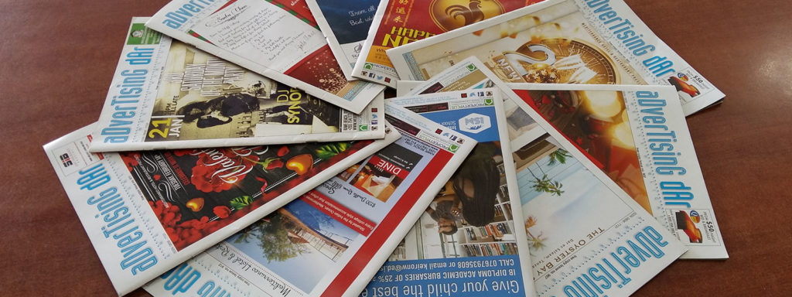

Established in 1999, Advertising Dar started with a dream and a goal. A goal to be reliable medium connecting businesses with its targeted customers, and a dream to be the best source of information you get regarding anything and everything in Dar es Salaam. What started out as a local business with a weekly publication in the beautiful city of Dar es Salaam, has now grown to multiple regions in Tanzania including Arusha and Zanzibar.
Over time, the paper grew and so did the revenue. However, in spite of the good fortune, some things are still the same. For example the simplicity of the operation that produces the Advertising Dar publication.
Today, our team strives hard to produce this classifieds magazine – hundreds of hours go into each issue. We’re very proud to be producing a publication that is not only well-read but also provides value to each and every reader in Tanzania.
A few years into the business, we made a major decision of growing our reach digitally. Our website is specially designed to allow users to post their ad at a click of a button providing ease and simplicity. This in turn provides customers and businesses alike with maximum reach since the ads would appear both online and on the weekly published magazine.
Over the last 18+ years we have worked with a great deal of clients from various niches. We list thousands of business and private adverts across hundreds of categories.
The events and entertainment section is a must for both visitors and residents for keeping abreast with regular functions/events.
We believe that our classifieds magazine is striking, efficient and a powerful source of advertising for every business out there whether big or small. This is probably one of the reasons that our clients repeatedly choose to advertise with us.
We focus on striving for continuous improvement. With the development of Digital Marketing in Tanzania, we decided to increase our reach and build our presence on various social media platforms like Facebook, Instagram, Twitter and Pinterest. It started out slow but gradually we’ve been able to build a good network of followers which is still growing. This allows us to provide our clients and advertisers with better exposure and brand awareness.